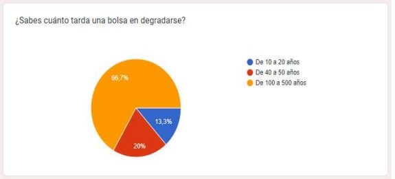
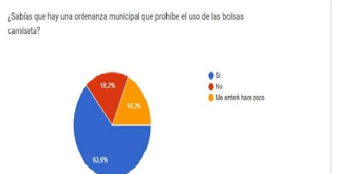
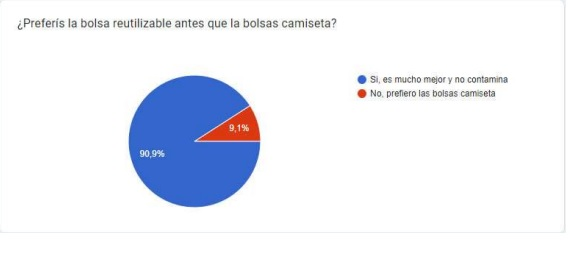
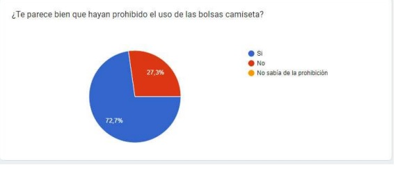
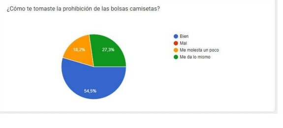
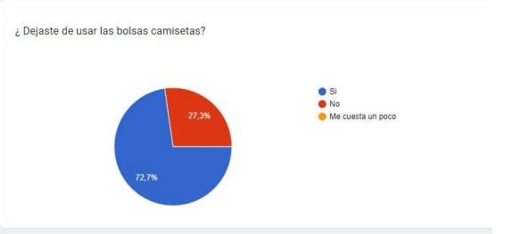
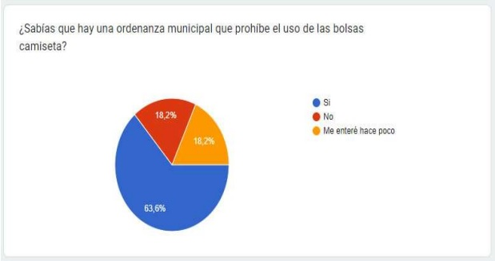
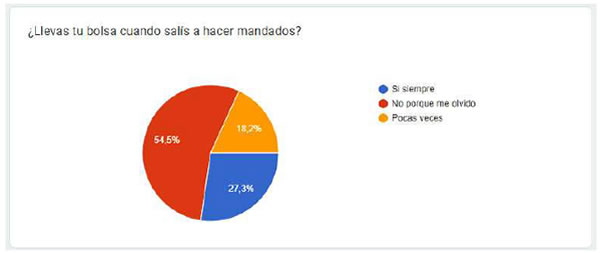

Las encuestas se realizadas sobre una población de 213 personas de distintas franjas de edad, las respuestas fueron diversas a continuación mostramos los datos obtenidos. Datos que arrojó la encuestas sobre el reciclado: los resultados muestran un alto nivel de conciencia sobre el reciclaje y los problemas ambientales asociados con las bolsas de polietileno. Un porcentaje significativo de la población conoce el tiempo de degradación de las bolsas y entiende la importancia de reciclar. Además, la mayoría está al tanto de la regla de las 3 R, lo que sugiere que hay una buena base de educación ambiental entre los encuestados. A pesar de la conciencia existente, hay una brecha entre el conocimiento y la práctica. Muchos encuestados admiten que les cuesta dejar de usar bolsas de polietileno o que se olvidan de usar contenedores reciclables, lo que indica que, aunque la información está disponible, la implementación de prácticas sostenibles en la vida diaria aún enfrenta desafíos.
Datos que arrojó la encuesta sobre la prohibición del uso de las bolsas de polietileno: la ordenanza que regula el uso de bolsas de polietileno parece haber tenido un impacto positivo, aunque gradual. Muchos encuestados han comenzado a usar bolsas reutilizables debido a la prohibición. Sin embargo, un segmento de la población todavía muestra resistencia o falta de hábito para el cumplimiento de la ordenanza, lo que señala la necesidad de continuar con campañas de concienciación. Las respuestas varían significativamente, lo que indica que las políticas y campañas futuras deben ser más específicas y dirigidas a distintos grupos para que resulten más efectivas.







El proyecto ha sido una experiencia enriquecedora a través de las distintas actividades que realizamos logramos reducir el uso de las bolsas de polietileno como así también logramos que la comunidad tome conciencia y se comprometa con la reutilización, el reciclado y la disminución de los residuos urbanos. Las charlas con expertos, la producción de bolsas, y la creación del sitio web son testimonio de nuestro compromiso con el medio ambiente y de nuestra capacidad para realizar proyectos que generen un impacto positivo en la sociedad. En general, los datos sugieren que mientras hay un buen nivel de conocimiento sobre los temas ambientales, la implementación de comportamientos sostenibles aún requiererefuerzos, tanto a través de la educación continua como de la creación de infraestructuras que faciliten el reciclaje y el uso de alternativas sostenibles.
Continuar con la producción y venta de bolsas ecoamigables. Planificar y ejecutar nuevos proyectos enfocados en la sostenibilidad. Actualizar y mantener el sitio web del proyecto para seguir compartiendo nuestros
avances.